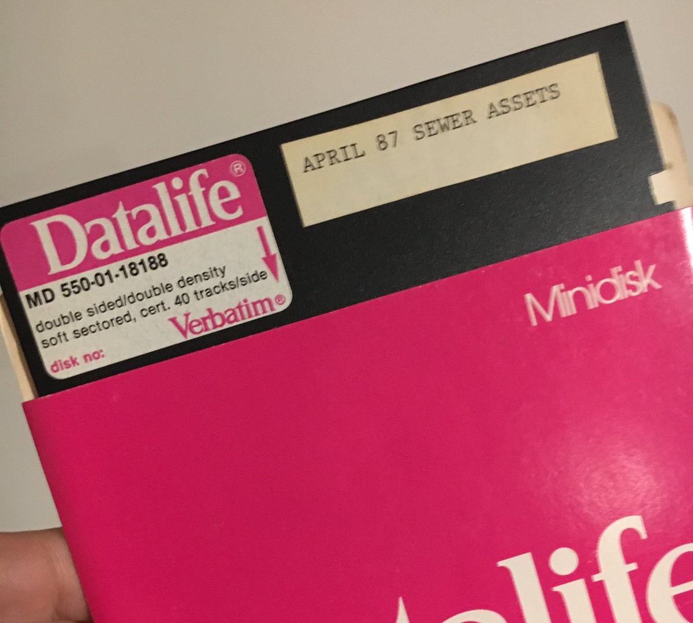

  	<div class="flex-wrap">
      
  	  <article class="tweet  " id="main">
  	    <p class="full_text">
  	      :sigh: I hate working with crappy data <div class="gallery"><ul><li><a href="../../tweets_media/1001680366434967554-Deau-stW0AATke5.jpg"></a></li></ul></div>
  	    </p>
  	    <p class="created_at">
  	      5/29/2018, 9:23:04 PM
  	    </p>
  	    <p class="favorite_count">Favs: 6</p>
  	    <p class="retweet_count">Retweets: 0</p>
  	    <a class="permalink" href="../1001680366434967554">link</a>
  	  </article>

  	</div>
  </div>
